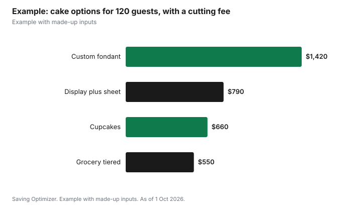

Weddings · Canada
Wedding Cake Costs and Cheaper Alternatives in Canada
Wedding cake cost is driven by the number of servings and the design, so the main ways to save are to order fewer decorated servings and fill the rest with cheaper cake or desserts. A popular approach is a small, decorated display cake for the cutting plus plain sheet cake served from the kitchen. Tax can matter too: under CRA rules, a whole cake bought from a bakery is generally a zero-rated basic grocery with no GST or HST, and cupcakes bought six or more at a time are too, while food supplied with a catering service is taxable. Ask your venue about any cake-cutting fee before you bring an outside cake.
Key takeaways
- Cake price scales with servings and design complexity.
- Display cake plus sheet cake cuts the decorated portion.
- Cupcakes, dessert tables and grocery cakes are cheaper alternatives.
- CRA: whole bakery cakes are generally zero-rated; single servings bought in fewer than six are taxable; catered food is taxable.
- Ask venues about cake-cutting fees and outside-vendor rules.
- Example with made-up inputs: four options for 120 guests.
How cakes are priced
Custom bakeries usually quote per serving, with the rate rising for fondant, intricate piping, sugar flowers, unusual flavours, structural tiers and delivery and setup. Ask for a quote that separates the base cake, decoration, delivery and any stand rental or deposit. Not every guest eats cake after a full dinner, and children may share, so consider ordering for fewer than your total guest count.
| Factor | Effect on cost |
|---|---|
| Number of servings | Main driver |
| Fondant versus buttercream | Ask how each finish is priced |
| Sugar flowers and hand detail | Large labour cost |
| Tiers and structure | Supports and assembly add cost |
| Delivery and setup | Often a separate fee |
| Stand rental | Deposit or fee |
Display cake plus sheet cake
A small two- or three-tier display cake gives you the photo and the cutting moment, while sheet cakes in the same flavour are cut in the kitchen and plated for guests. You pay decorated-cake prices only for a fraction of the servings. Some couples use a partly fake display cake with real tiers only where they cut. Ask the baker to match the sheet cake flavour and filling to the display cake, and confirm who cuts and plates it, since kitchen staff time may be billed separately by the caterer.
Dessert tables, cupcakes and alternatives
- Cupcake towers with a small cutting cake on top.
- A dessert table of squares, cookies and tarts from a bakery.
- A cultural dessert, such as a croquembouche or a family recipe.
- Pies, doughnuts or an ice cream bar.
- Skip a separate dessert and serve the cake as dessert.
If dinner includes a dessert course, a large cake on top of it often goes uneaten. Serving the cake as the plated dessert, if the caterer agrees, removes one cost.
Grocery and bakery options
Grocery-store bakeries and smaller local bakeries may sell plain tiered or sheet cakes for less than custom studios, so compare quotes, and you can add fresh flowers or a topper. Order early, ask about delivery, and confirm how the cake must be stored. Picking up a whole cake from a bakery yourself also keeps it out of the catering tax rules described below.
How sales tax applies
The CRA's GST/HST memorandum on basic groceries says cakes, muffins, pastries, cookies, doughnuts and similar products are zero-rated unless they are sold as single servings in quantities of fewer than six; a single serving is under 230 grams. So a whole wedding cake, or a box of a dozen cupcakes, bought from a bakery is generally tax-free. However, all food and beverages sold under a contract for, or in conjunction with, catering services are taxable, along with related service charges, and the CRA lists delivery with serving amenities such as dishes and cutlery as a sign of catering. A cake supplied by your caterer or included in a venue package will usually be taxed.
| Purchase | Tax treatment |
|---|---|
| Whole cake from a bakery | Generally zero-rated |
| Six or more cupcakes or pastries | Generally zero-rated |
| Fewer than six single servings under 230 g | Taxable |
| Cake supplied with catering services | Taxable |
| Service charge contingent on the food | Taxable |
Cutting fees and venue rules
Some venues and caterers charge a per-guest fee to cut and plate an outside cake, or require cakes from approved vendors. Ask before booking a baker, and get the fee in writing. Check decor rules too; the Gardiner Museum in Toronto, for example, does not permit open flames, so sparklers or candles may be off limits.
Ordering timeline and storage
Popular custom bakers can book up well ahead of peak wedding season, so contact them once your date and venue are set; grocery and smaller bakeries may need less notice, but confirm their cut-off. Book a tasting if offered, and confirm in writing the flavour, size, design, delivery time and who sets the cake up. Ask whether the cake needs refrigeration and whether the venue has space for it, especially for buttercream in summer. If you pick up the cake yourself, plan a flat, cool spot in the car and someone to hold it. Agree who boxes leftovers and whether the top tier will be saved for an anniversary.
Allergies
Cakes often contain several of the allergens Health Canada lists as most common, including wheat, eggs, milk, tree nuts, peanuts and sesame. Ask the baker for an ingredient list, label the dessert table, and consider a separately boxed allergy-safe option for guests who need it.
Example with made-up inputs
These numbers are an example with made-up inputs. For 120 guests: a custom fondant cake for 120 at $9 a serving plus $100 delivery is $1,180. A small display cake for 30 at $9 plus two sheet cakes at $90 each and $100 delivery is $550. Cupcakes, 10 dozen at $36, plus a $60 cutting cake, is $420. A grocery-store tiered cake at $250 plus $60 of fresh flowers is $310. If the venue charges a made-up $2 per guest to cut an outside cake, add $240 to any option not supplied by the caterer.
| Option | Cake cost | With $240 cutting fee |
|---|---|---|
| Custom fondant cake | $1,180 | $1,420 |
| Display cake plus sheet cakes | $550 | $790 |
| Cupcakes plus cutting cake | $420 | $660 |
| Grocery tiered cake plus flowers | $310 | $550 |

Steps
- Ask the venue about outside cakes and cutting fees.
- Decide whether cake is dessert or an extra.
- Order servings for the expected eaters, not all guests.
- Get itemized quotes from two or three bakers.
- Confirm delivery, storage and setup.
- Collect allergy information and label the dessert.
Common mistakes
- Ordering a full cake and a plated dessert.
- Missing the venue's cutting fee.
- Paying custom rates for servings cut in the kitchen.
- Assuming tax applies the same way to every cake.
- Forgetting allergy labels.
Related: wedding catering costs and 2027 wedding budget.
Sources
- Canada Revenue Agency, GST/HST Memorandum 4.3, Basic Groceries, canada.ca (Wayback copy), as of 1 Oct 2026.
- Health Canada, Food allergies, canada.ca (Wayback copy), as of 1 Oct 2026.
- Gardiner Museum, Events Package, January 2026, gardinermuseum.on.ca, as of 1 Oct 2026.
- Cake prices, servings and the cutting fee in the example are made-up inputs.
Frequently asked questions
How are wedding cakes priced?
Custom bakers usually quote per serving, with design, fondant, tiers and delivery adding to the price.
Is there GST or HST on a wedding cake?
A whole cake bought from a bakery is generally zero-rated under CRA rules. Cake supplied with catering services is taxable.
Are cupcakes taxed?
Cupcakes bought six or more at a time are generally zero-rated; single servings bought in fewer than six are taxable.
What is a cake-cutting fee?
A per-guest fee some venues or caterers charge to cut and serve an outside cake. Ask before booking.
Is a display cake plus sheet cake worth it?
It usually costs much less, because only the display cake is decorated.
Do we need cake if we serve dessert?
Not necessarily. Serving the cake as dessert avoids paying for both.
Researched and drafted with AI assistance and fact-checked against official Canadian sources. How we create content.
Disclosure: Saving Optimizer may earn a commission if a partner link is added later. No partnership is claimed on this page. Education only.